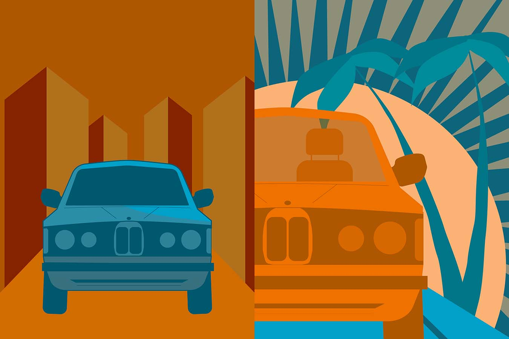

Design II Project 3
For this assingment, we had to take the design and color schemes from the previous assignment, and create two designs off of it, one static, and one dynamic. I was aiming for the two designs next to each other to tell a story, from going to the city with bland colors and a boring landscape, to a more tropical, vibrant, and fun environment.